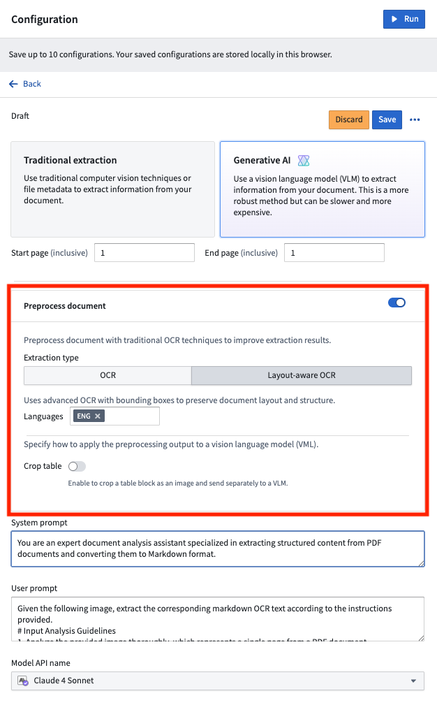
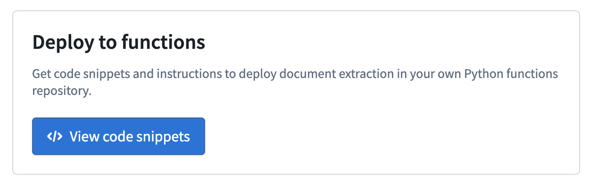

Traditional extraction configurations are based on algorithms not backed by large language models, such as PDF metadata extraction, Optical Character Recognition (OCR) detection, and layout detection. These configurations in AIP Document Intelligence are backed by the transform media item endpoint.
Learn more about using document extraction media transformations in AIP Document Intelligence.
For use cases that work with more complex documents, combining VLMs with preprocessing techniques has proven quite successful. Under Configuration > Generative AI, toggle on Preprocess document. Document preprocessing essentially runs traditional OCR (Optical Character Recognition) on the document, then passes that output in addition to the document page itself to a VLM, giving the model more context to successfully analyze the document.

:::callout{theme="warning"} Currently, you can only perform extraction evaluations if Anthropic Claude 4 Sonnet is available for your enrollment. :::
For each run of an extraction strategy, you can choose to view a qualitative rubric that leverages your selected VLM as a judge. We fine-tuned the prompt to rank various area from 1 (worst) to 5 (best), including how well a given strategy extracted tables, headers, and more. Evaluations allow you to quickly iterate and make judgments as you test different prompts and strategies.
Once you are satisfied with a particular strategy, you can deploy it in a batch pipeline to run it over your wider dataset, or as per-page extraction Python functions. Per-page functions let you build your own extraction workflow that consumes the Ontology, structured however your use case requires.
You can export your strategy to a Python transform repository template that is fully dynamic; the dataset RID/path, model RID/path, custom prompt, and selected configuration are all automatically configured. We recommend you verify this work before triggering a build.

Follow the in-platform guide and use the generated code snippets to set up a Python functions repository with your extraction strategy. These functions extract one page at a time. Use your own orchestration strategy with tools like Automate to customize this workflow with your Ontology.
Learn more about the features of AIP Document Intelligence and how to get started.